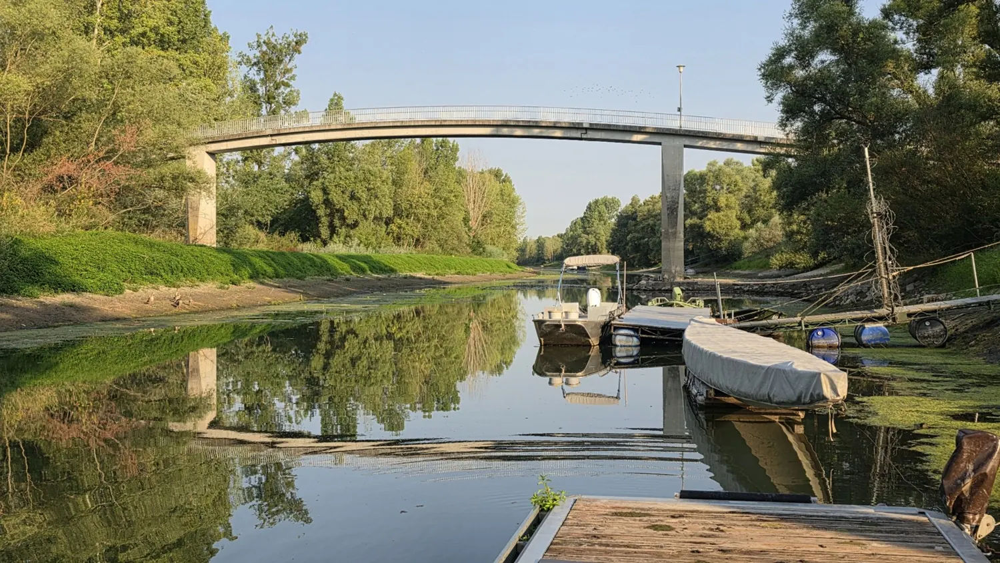
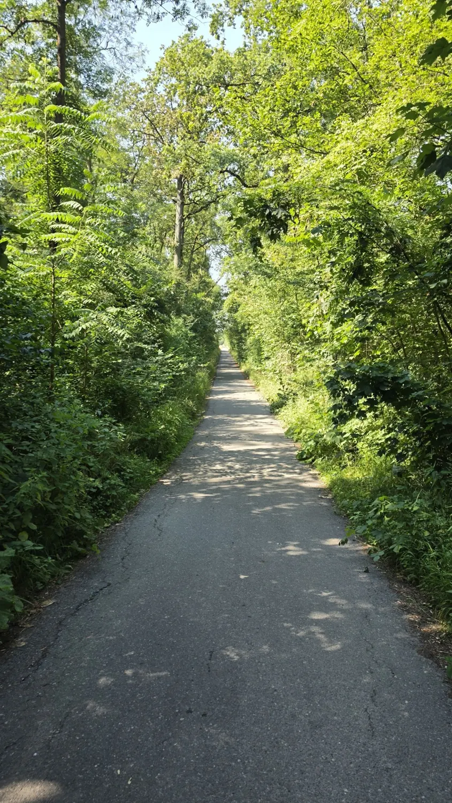
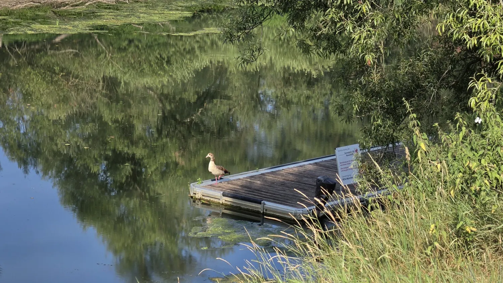
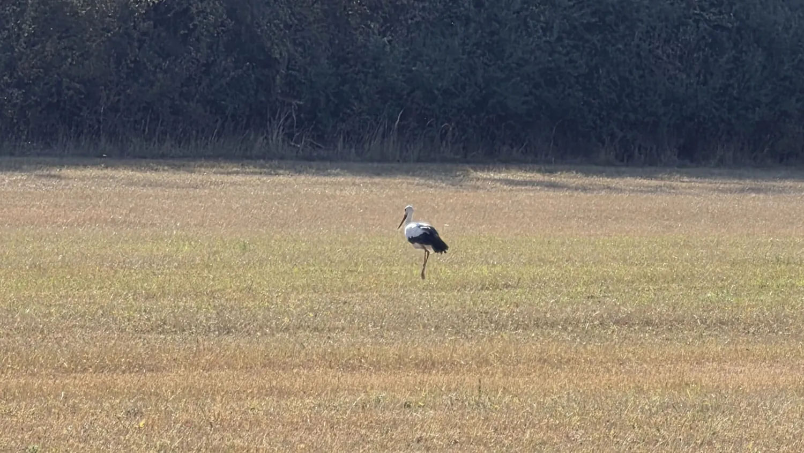

Natur · Landschaft · Heimat · Perspektiven
Region
Verbunden mit dem Kühkopf und unserer Heimat. Zwischen Rhein, Auenwald und Ried liegt ein Ort, der für mich weit mehr ist als eine geografische Lage — er steht für Natur, Ruhe und Ausgleich, für ein Stück Zuhause.
Der Kühkopf
Ein besonderer Ort
Wasserarme, Auenwald und weite Wiesen prägen die Landschaft rund um den Kühkopf. Eine Gegend, die ich am liebsten unterwegs entdecke – zu Fuß, mit dem Rad oder bei einer Pause am Wasser.
Die Rheininsel steht bereits seit 1952 unter Naturschutz. Heute bilden Kühkopf und Knoblochsaue gemeinsam eine geschützte Auenlandschaft voller Leben.
Mehr über den Kühkopf

Unsere Heimat
Natur, die bewegt.
Manchmal braucht es nur einen Weg durchs Grün, einen weiten Blick oder ein paar Minuten am Wasser.
Die Landschaft rund um den Kühkopf ist für mich ein Ausgleich zum Alltag. Und ein Ort, an dem es immer wieder etwas zu entdecken gibt.
Unterwegs
Augenblicke, die bleiben.

Am Wasser
Spiegelungen, kleine Stege und ein Moment der Ruhe.

Auf den Wiesen
Weite Landschaft und Begegnungen am Wegesrand.
Impressionen
Mein Blick auf die Region
„Heimat muss nicht spektakulär sein.
Man muss nur wissen, wo man hingehört.“